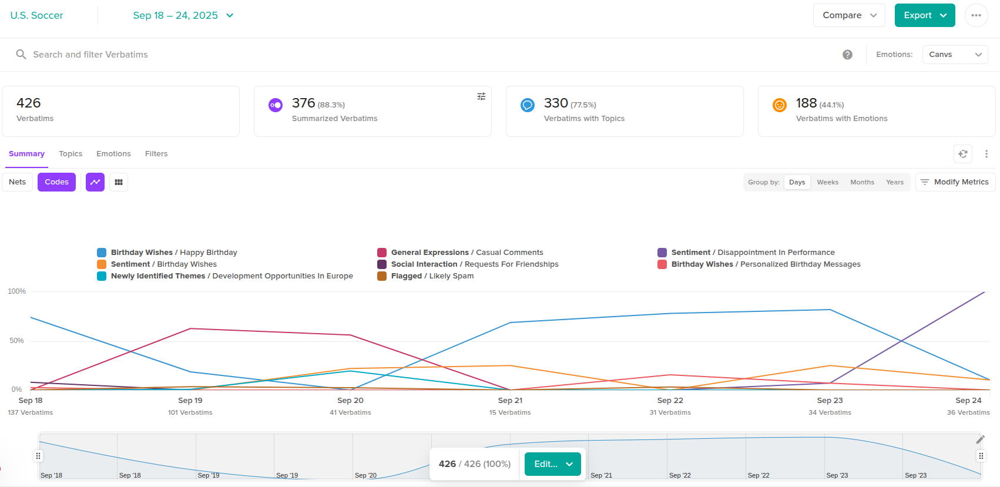
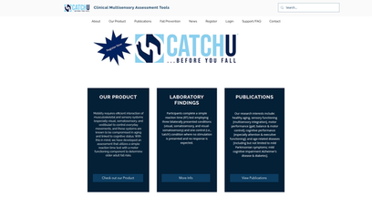
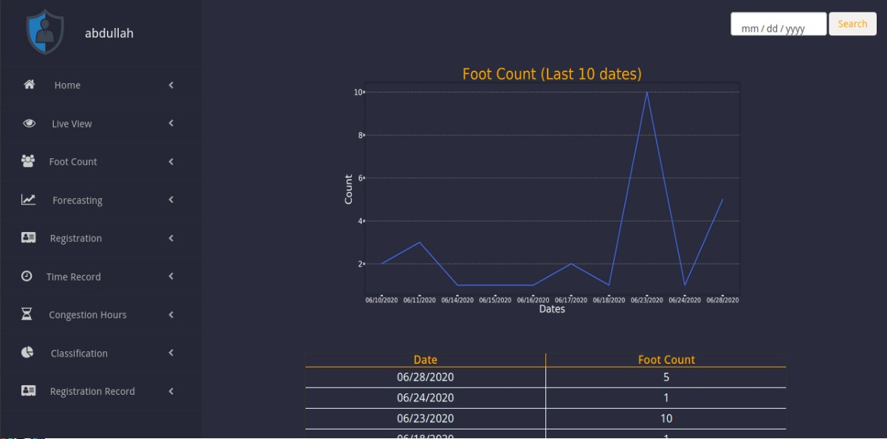
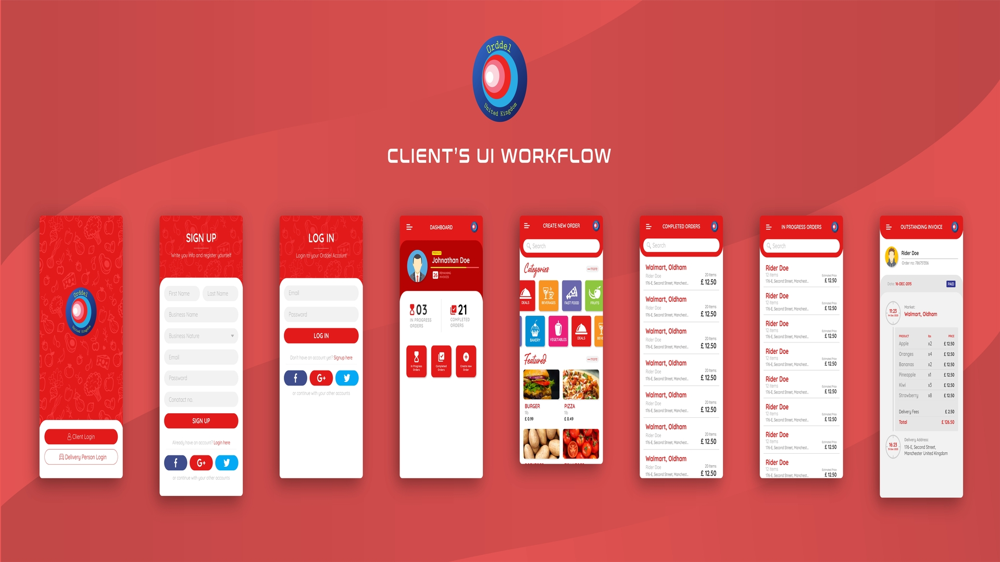

Featured Projects
Comprehensive portfolio showcasing 45+ completed projects across multiple domains
12+
AI/ML Projects
15+
Web Applications
8+
Mobile Apps
10+
Cloud & DevOps

Canvs AI
Canvs AI is a customer insights platform that transforms fragmented feedback into clear, data-driven strategies.
Powered by its AI engine "Asa," it consolidates open-ended feedback from various channels...
Python
Generative AI
LLMs
RAG
LangChain
HuggingFace
LangGraph
PyTorch
Django
FastAPI
PostgreSQL
OpenAI
AWS

CatchU - Fall-Risk Assessment & Analytics Platform
A multisensory health-risk assessment platform designed for older adults at risk of falls.
The solution includes mobile apps (iOS & Android) for users to perform reaction and balance tests...
Python
Django REST Framework
AWS Lambda
React
React Native
CICD

Visitor Counting and Identification System
Developed an AI-powered system for shopping malls to automate visitor monitoring and business intelligence.
The system integrated facial detection and recognition to identify and classify visitors...
Python
Scikit-learn
PyTorch
OpenCV
Django
Time-series forecasting, statistical modeling
Pandas/Numpy
Redis
.png)
BlueGas
Developed an end-to-end solution for online ordering and delivery of fiber gas cylinders.
The system included customer & delivery mobile apps (iOS/Android), a web app, and an admin dashboard.
Python/Django
React
React Native
PostgreSQL
AWS

Cyber Reconnaissance & Combat Website - Bahria University
Developed a dedicated web portal for the Cyber Reconnaissance & Combat (CRC) initiative at Bahria University, supported by HEC.
The portal highlights CRC’s mission, research areas, publications, and researcher profiles while providing downloadable resources for stakeholders.
I was responsible for full-stack development, content integration, and deployment, ensuring a responsive, user-friendly design aligned with the
university’s branding.
Django
React
PostgreSQL
AWS

AI-Powered E-commerce
Complete e-commerce platform with AI-driven product recommendations, inventory management,
and automated customer service. Integrated payment gateways and multi-vendor support.
Django
JavaScript
Stripe API
ML

RESTful API Ecosystem
Comprehensive API system with authentication, rate limiting, and real-time data processing.
Serves multiple client applications with 99.9% uptime and sub-100ms response times.
FastAPI
MongoDB
Redis
Docker

Orddel
ORDDEL is a multi-vendor B2B grocery ordering and delivery platform built to serve restaurants, shopkeepers, and catering businesses needing bulk grocery supplies.
Android
Java
Firebase
Google Maps

Android Enterprise App
Feature-rich Android application with offline capabilities, real-time synchronization,
and advanced security features. Integrated with Firebase and Google Maps API.
Android
Java
Firebase
Google Maps

IoT Mobile Controller
Smart home automation app with IoT device integration, voice commands, and AI-powered
scheduling. Controls multiple device types with intuitive user interface.
Android
IoT
MQTT
AI

Enterprise Cloud Architecture & DevOps Pipeline
Designed and implemented scalable cloud infrastructure on AWS with automated CI/CD pipelines,
containerized microservices, and comprehensive monitoring solutions for enterprise applications.
AWS EC2
ECS
Fargate
Docker
Terraform
CI/CD

MLOps Pipeline with AWS SageMaker & Bedrock
Built end-to-end MLOps pipeline using AWS SageMaker for model training, deployment, and monitoring,
integrated with AWS Bedrock for generative AI capabilities and automated model lifecycle management.
AWS SageMaker
AWS Bedrock
MLOps
Lambda
Step Functions
S3

Serverless Data Pipeline & Analytics Platform
Developed serverless data processing pipeline using AWS Lambda, Step Functions, and Glue for
real-time analytics, ETL workflows, and automated data lake management with cost-effective scaling.
AWS Lambda
Step Functions
AWS Glue
Kinesis
QuickSight
CloudWatch